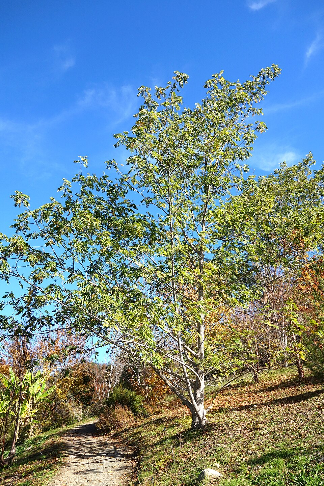

Pterocarya — Wingnut (Vleugelnoot)
Built like a freight train from the walnut family, the Wingnut sends winged seeds raining down like shrapnel while its massive canopy and deep riverside roots make it nearly impossible to uproot.
Combat flavor
The Juggernaut label fits: fast growth to massive size, allelopathic root zone acts as area-denial, and a seed-rain special attack would suit its prolific winged fruit. Moderate wood density means it can swing with real authority without being sluggish.
Real-world facts
Typical / max height20–30 m typical; Caucasian wingnut (P. fraxinifolia) can exceed 30 m (up to ~35 m); fastest-recorded growth of 6 ft (~1.8 m) per year in youth
Lifespan200–260+ years for P. fraxinifolia
WoodBasic specific gravity ~0.35 (equates to ~450–500 kg/m³ air-dry estimate); Brinell hardness >5 kg/mm²; comparable to light commercial hardwoods; used for plywood, matches, furniture. Density label: estimated air-dry ~460 kg/m³
Growth speedFast (especially in youth; among fastest deciduous hardwoods)
Ecology / notable traitsMember of Juglandaceae (walnut family) — roots produce juglone-like allelopathic compounds suppressing nearby plants; strongly riparian, stabilises riverbanks; large pinnate leaves (up to 90 cm); prolific winged-nutlet seed dispersal; spreads aggressively by root suckers; native to Asia/Caucasus region; uncommon outside specialist collections in the West
Where they grow in Amsterdam
Every pin is a real registered tree in the municipal open-data registry. Clusters show how many trees they hold — zoom in and they split apart down to individual trees.
Gallery
